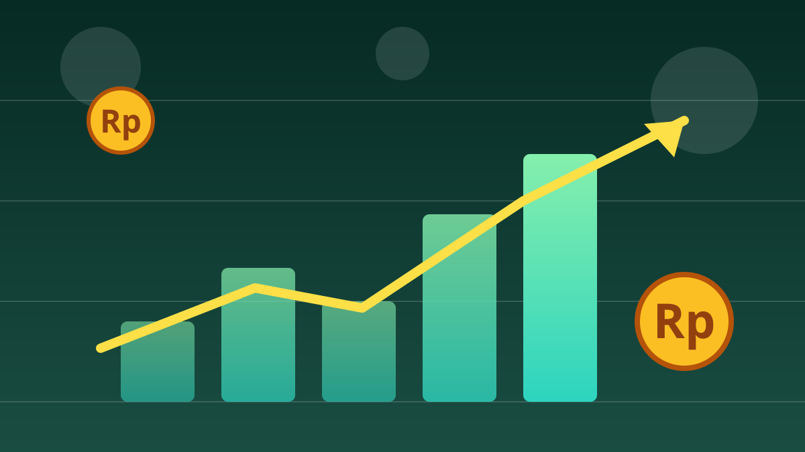

1 / 6

💰 EKONOMI
Asing buang GOTO Rp663 miliar, kok harganya nggak jatuh?
Plot twist di bursa saham minggu lalu. Geser buat tau ceritanya →
2 / 6
📉
Angkanya segini
Pada perdagangan 5–9 Oktober 2026, investor asing net sell alias jual bersih Rp663,2 miliar di saham GOTO.
GOTO jadi saham yang paling deras dilepas asing sepekan itu, menurut data Stockbit.
3 / 6
🤨
Yang aneh: harganya anteng
Meski diguyur jual asing segede itu, harga GOTO ditutup stagnan dibanding pekan sebelumnya.
Bandingkan dengan pekan 28 September–2 Oktober: sahamnya anjlok 40% dengan net sell asing tembus Rp979,4 miliar. Jauh lebih parah.
4 / 6
🏦
Bukan cuma GOTO
Asing juga melepas BBCA Rp293,5 miliar, BMRI Rp235,6 miliar, BBRI Rp183,2 miliar, dan TLKM Rp170,3 miliar sepekan itu.
Tapi di sisi lain ada yang diborong: saham ULTJ dicatat beli bersih Rp111,5 miliar. Jadi arusnya nggak satu arah.
5 / 6
🧐
Katanya ada aturan baru
Sentimennya soal regulasi: pemerintah menerbitkan Perpres 27/2026 sebagai kerangka hukum ekosistem transportasi daring, dengan 3 kementerian diminta terbitkan aturan pelaksana paling lambat 31 Desember 2026.
Mandiri Sekuritas dalam catatannya justru masih merekomendasikan beli dengan target harga Rp65. Catatan redaksi: itu pandangan analis, bukan anjuran dari kami.
6 / 6
🤔
Efeknya ke lo apa?
Buat pengguna Gojek, GoPay, Tokopedia: operasionalnya jalan normal, yang goyang itu sahamnya — bukan layanannya. Jangan panik hapus aplikasi.
Buat yang penasaran investasi saham: ini contoh nyata kenapa harga bisa bergerak beda arah sama arus dana. Selalu riset dulu, jangan FOMO, dan pahami risikonya sebelum setor uang.